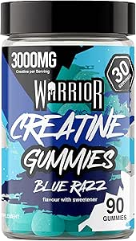
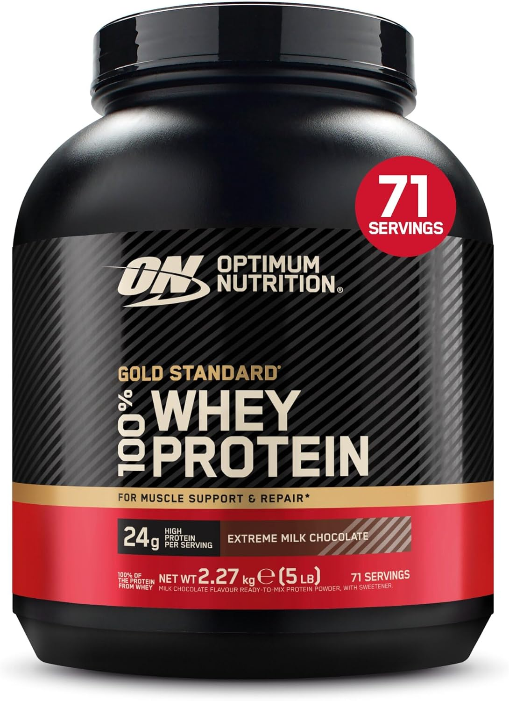
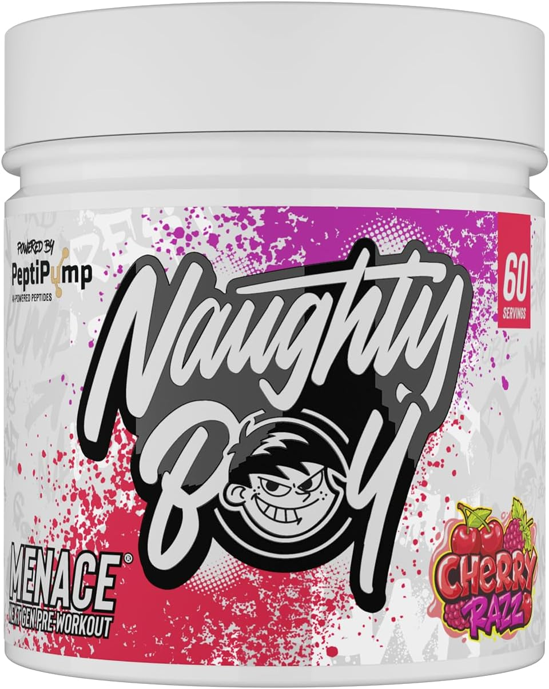
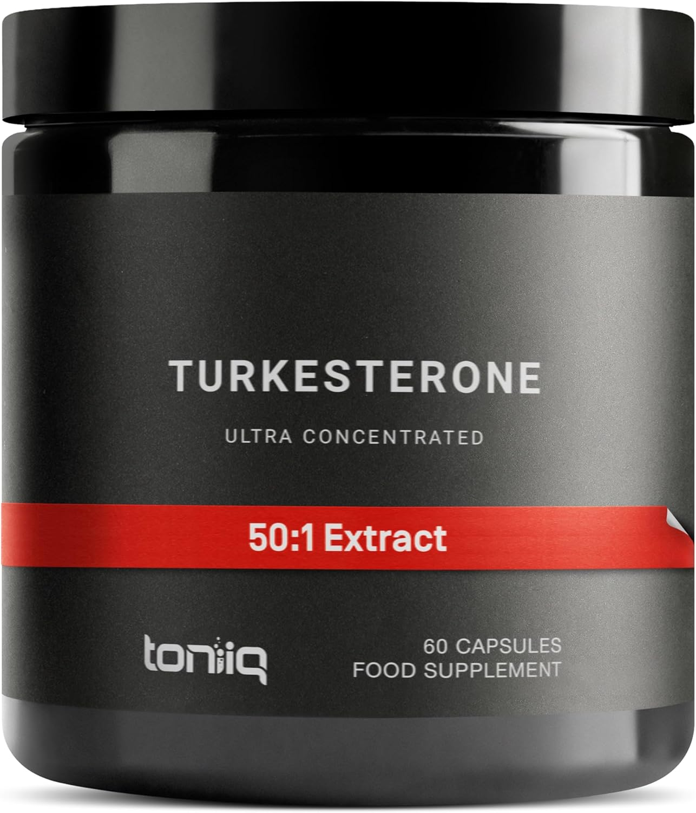
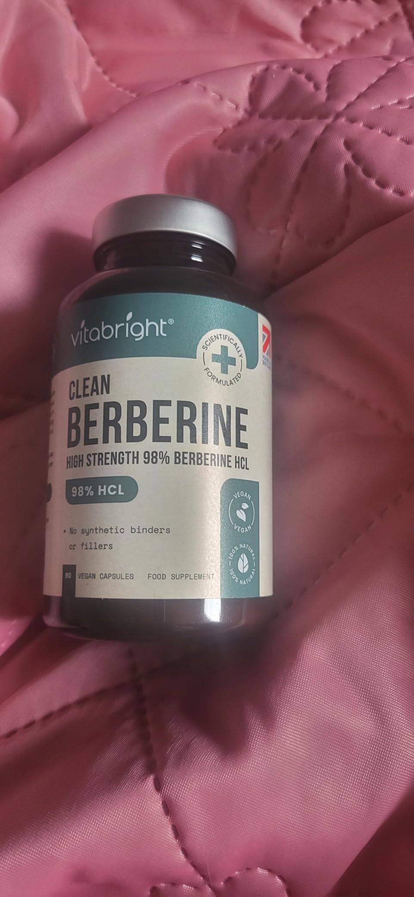
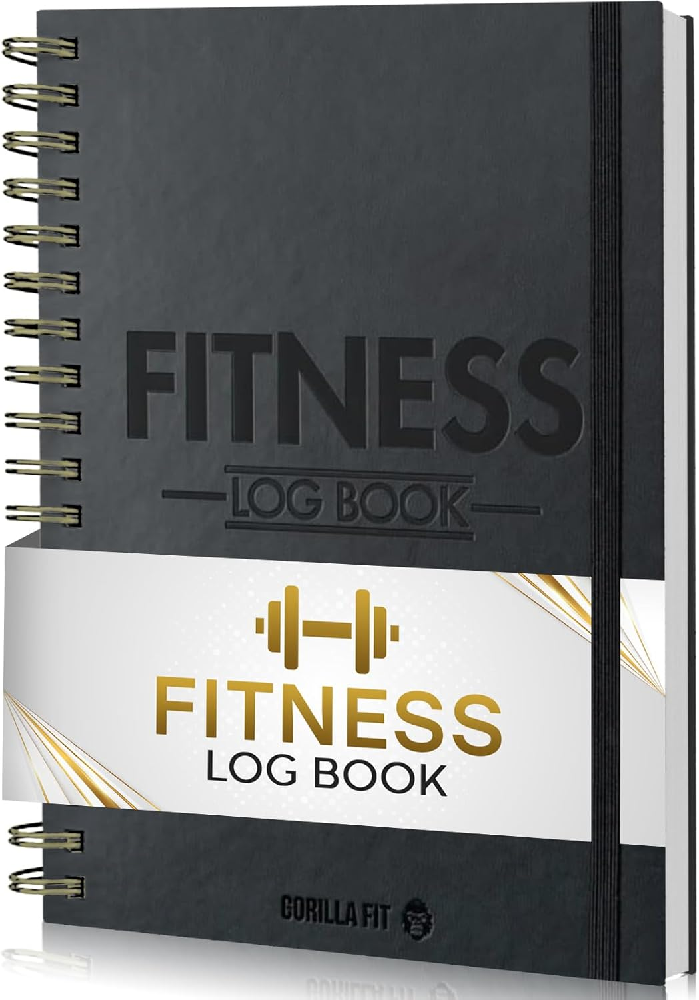
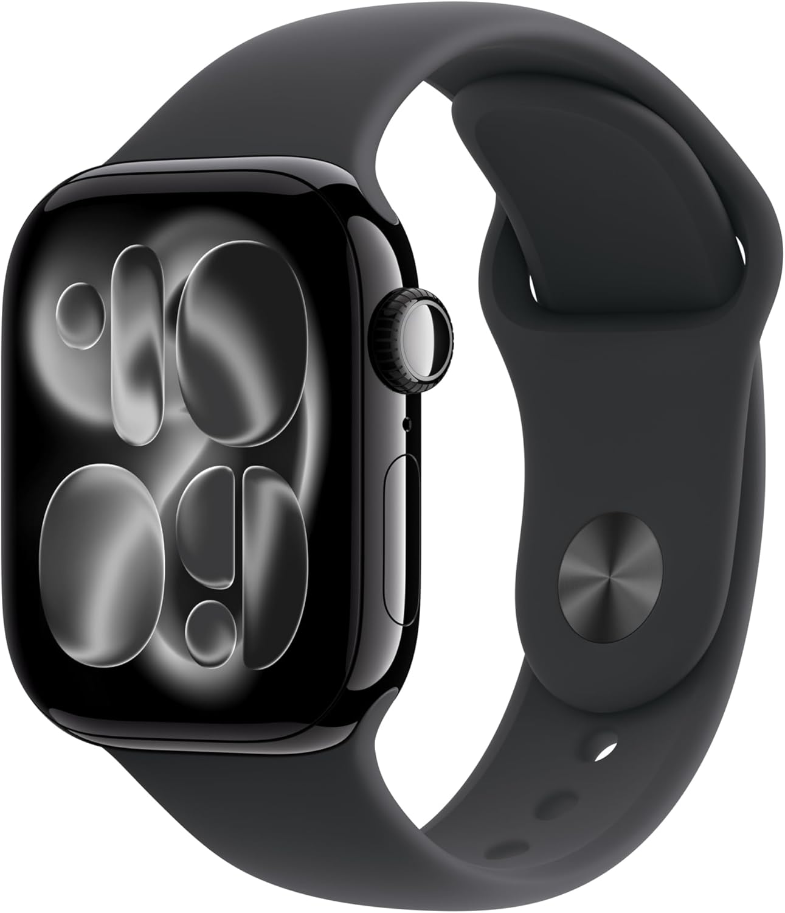

THE STACK
The links here are affiliate links — if you buy through them, I get a small cut at no extra cost to you. That's how the site stays free.

Creatine monohydrate is the single most evidence-backed performance supplement on the market. Full stop. I've used it for years. These gummies are the most convenient format — no mixing, no mess. 5g per day, every day. No loading phase needed.

Food first. But if you're hitting 180g of protein a day, a shake fills the gap. This is what I use. Clean ingredient list, decent flavour, mixes properly. Not sponsored — just the one I keep buying.

Most people in the UK are deficient. D3 affects testosterone, immune function, mood, and bone density. K2 makes sure the calcium goes where it should. High-dose drops, vegetarian, 1000 IU D3 + MK-7 K2 per drop. This is the exact product I've used for two years.

I don't train on pre-workout every session. On heavy days — squats, deadlifts, sessions where focus matters — this is what I reach for. Menace V2 is properly dosed. CDP-Choline and Uridine for focus that doesn't feel like anxiety. Not a stimulant-dump product.

Peruvian adaptogen. Used for energy, libido, and stress management. The evidence is decent, not definitive — but I've used it during heavy training blocks for years and notice the difference. Not a stimulant. Morning dose with food.

Ecdysteroid from Ajuga plant extract. Decent data on protein synthesis and nitrogen retention in natural athletes. Not a magic pill — but I include it during competitive blocks. Consistent food, sleep, and training matter 100x more. If those are sorted, this is worth considering.

Insulin sensitiser. Helps partition nutrients — more goes into muscle, less into fat storage. Particularly useful during a cut or maintenance phase. Also studied extensively for metabolic health. I cycle this — not year-round. Take with a meal containing carbohydrates.

Arnold's encyclopedia. Written in 1999. Still the best single reference for natural bodybuilding training and nutrition. Covers everything from beginner foundations to advanced competition prep — with real detail, not the 800-word blog post version. If you own one book about training, make it this.

Paper logs outlast every app. Every set, every rep, every PR — written down, dated, tracked. You can't lie to paper. The discipline of logging sessions by hand builds the habit of actually following a programme. Every serious lifter I know keeps a logbook. There's a reason for that.

Rest timing, heart rate monitoring, session logging — the watch does all three without you having to think about it. I use it for timed rest periods between heavy sets and to keep session logs when I'm away from the logbook. If you're going to spend money on any piece of kit outside the gym, make it this.
Disclosure: Links on this page are affiliate links. If you buy through them, I earn a small commission at no extra cost to you. I only list products I personally use.